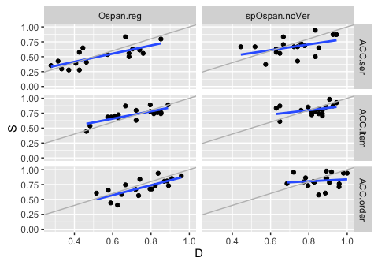
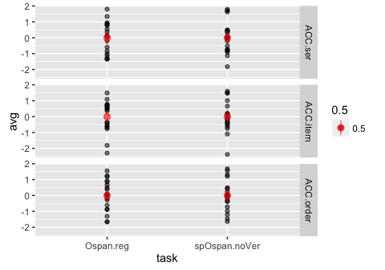
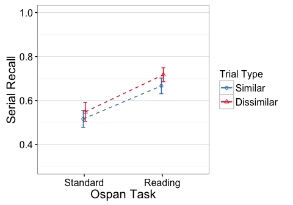
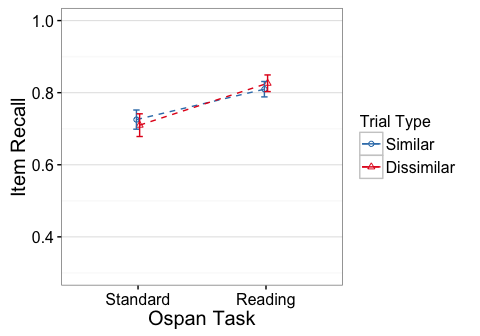
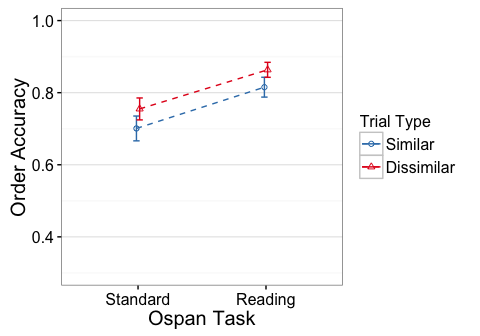

e1 - Ospan.reg, spOspan.noVer
library(knitr)
opts_knit$set(self.contained=TRUE, root.dir="../")
opts_chunk$set(fig.cap="", error=TRUE, cache=FALSE, echo=FALSE)#, fig.width=5, fig.height=3.5)
Descriptives
N
## task trialtype Participants
## 1 Ospan.reg D 18
## 2 Ospan.reg S 18
## 3 spOspan.noVer D 18
## 4 spOspan.noVer S 18
Residual Check
Scatterplots of Similar vs Dissimilar

gray line has intercept=0, slope=1. Blue line is regression fit.
Averaged across similarity conditions (and z-scored)

Effect Plots
Standard errors are between group
  
ACC.ser
Error: Unique_ID
Df Sum Sq Mean Sq F value Pr(>F)
task 1 0.4577 0.4577 11.19 0.00202 **
Residuals 34 1.3910 0.0409
---
Signif. codes: 0 '***' 0.001 '**' 0.01 '*' 0.05 '.' 0.1 ' ' 1
Error: Unique_ID:trialtype
Df Sum Sq Mean Sq F value Pr(>F)
trialtype 1 0.0305 0.030483 3.156 0.0846 .
task:trialtype 1 0.0015 0.001543 0.160 0.6919
Residuals 34 0.3284 0.009659
---
Signif. codes: 0 '***' 0.001 '**' 0.01 '*' 0.05 '.' 0.1 ' ' 1
Partial Eta-square
eta.2
task 0.247593627
trialtype 0.084939215
task:trialtype 0.004677214
Simple Effects
Standard
Error: Unique_ID
Df Sum Sq Mean Sq F value Pr(>F)
Residuals 17 0.8951 0.05266
Error: Unique_ID:trialtype
Df Sum Sq Mean Sq F value Pr(>F)
trialtype 1 0.00915 0.009154 1.208 0.287
Residuals 17 0.12888 0.007581
eta.2
trialtype 0.0663216
Reading
Error: Unique_ID
Df Sum Sq Mean Sq F value Pr(>F)
Residuals 17 0.4958 0.02917
Error: Unique_ID:trialtype
Df Sum Sq Mean Sq F value Pr(>F)
trialtype 1 0.02287 0.02287 1.949 0.181
Residuals 17 0.19952 0.01174
eta.2
trialtype 0.1028442
ACC.item
Error: Unique_ID
Df Sum Sq Mean Sq F value Pr(>F)
task 1 0.1811 0.18111 9.307 0.0044 **
Residuals 34 0.6616 0.01946
---
Signif. codes: 0 '***' 0.001 '**' 0.01 '*' 0.05 '.' 0.1 ' ' 1
Error: Unique_ID:trialtype
Df Sum Sq Mean Sq F value Pr(>F)
trialtype 1 0.00000 0.000005 0.001 0.975
task:trialtype 1 0.00458 0.004577 0.959 0.334
Residuals 34 0.16226 0.004772
Partial Eta-square
eta.2
task 2.149143e-01
trialtype 2.935392e-05
task:trialtype 2.743598e-02
Simple Effects
Standard
Error: Unique_ID
Df Sum Sq Mean Sq F value Pr(>F)
Residuals 17 0.449 0.02641
Error: Unique_ID:trialtype
Df Sum Sq Mean Sq F value Pr(>F)
trialtype 1 0.00214 0.002143 0.508 0.486
Residuals 17 0.07176 0.004221
eta.2
trialtype 0.02900232
Reading
Error: Unique_ID
Df Sum Sq Mean Sq F value Pr(>F)
Residuals 17 0.2126 0.01251
Error: Unique_ID:trialtype
Df Sum Sq Mean Sq F value Pr(>F)
trialtype 1 0.00244 0.002439 0.458 0.508
Residuals 17 0.09050 0.005323
eta.2
trialtype 0.02624026
ACC.order
Error: Unique_ID
Df Sum Sq Mean Sq F value Pr(>F)
task 1 0.2237 0.22367 9.979 0.00332 **
Residuals 34 0.7621 0.02241
---
Signif. codes: 0 '***' 0.001 '**' 0.01 '*' 0.05 '.' 0.1 ' ' 1
Error: Unique_ID:trialtype
Df Sum Sq Mean Sq F value Pr(>F)
trialtype 1 0.04709 0.04709 6.461 0.0158 *
task:trialtype 1 0.00016 0.00016 0.022 0.8834
Residuals 34 0.24784 0.00729
---
Signif. codes: 0 '***' 0.001 '**' 0.01 '*' 0.05 '.' 0.1 ' ' 1
Partial Eta-square
eta.2
task 0.2268971886
trialtype 0.1596748491
task:trialtype 0.0006421457
Simple Effects
Standard
Error: Unique_ID
Df Sum Sq Mean Sq F value Pr(>F)
Residuals 17 0.5582 0.03283
Error: Unique_ID:trialtype
Df Sum Sq Mean Sq F value Pr(>F)
trialtype 1 0.02636 0.026365 5.112 0.0372 *
Residuals 17 0.08768 0.005157
---
Signif. codes: 0 '***' 0.001 '**' 0.01 '*' 0.05 '.' 0.1 ' ' 1
eta.2
trialtype 0.2311856
Reading
Error: Unique_ID
Df Sum Sq Mean Sq F value Pr(>F)
Residuals 17 0.204 0.012
Error: Unique_ID:trialtype
Df Sum Sq Mean Sq F value Pr(>F)
trialtype 1 0.02089 0.020888 2.217 0.155
Residuals 17 0.16016 0.009421
eta.2
trialtype 0.11537